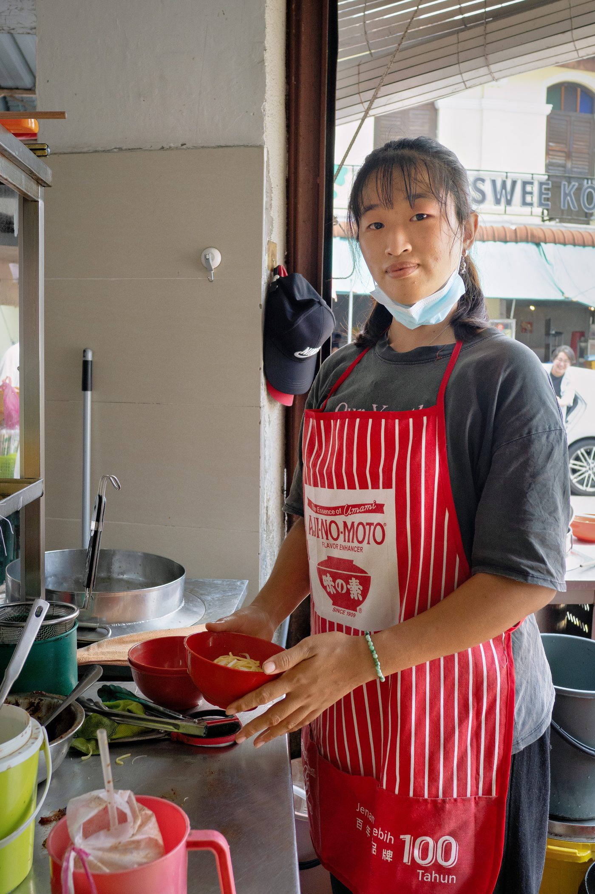
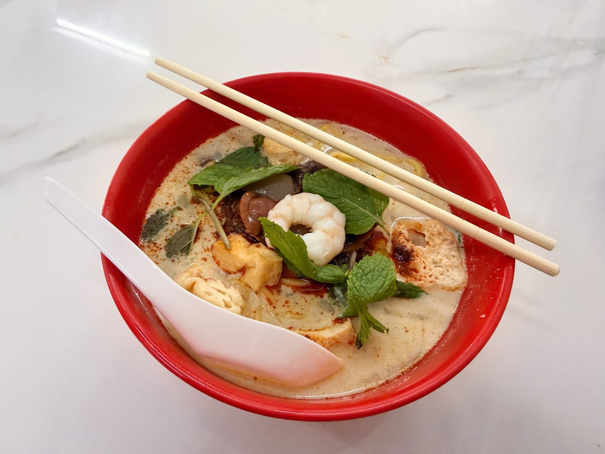

Field guide

Field note · Pulau Tikus · 28 Jul 2026
Curry Mee in Restoran 77 Food Yard
Hangry lunch fix at Restoran 77 — coconut Curry Mee, the bowl that unlocked Penang as true fusion for me.
Today I am grumpy and hangry. I need a fix, and for lunch I’m going in for a dish that is very important to me. Curry Mee is, I feel, a turning point in my relationship with Penang. Before trying Curry Mee, I did not fully grasp the cultural melting-pot, true “fusion” aspect of the food here. I was comparing Wantan Mee with a Hong Kong wonton soup, or the local versions of Chinese food with what I’d have in Shenzhen, for example. It’s only when I tasted Curry Mee that I realized what it means to have Indian, Malay, and Chinese flavours in a single dish. Then I was ready to explore Peranakan and Nyonya cooking, and to fully embrace the variety across these cross-pollinating subcultures — halal Chinese food, a rich curry soup base for Chinese noodles, and the distinct different-ness of food I thought I knew from Mainland China or Hong Kong.
To understand the background for this magical Curry Mee, I’m requesting data from my AI research assistant, C-Mee-PO.
C-Mee-PO briefs the bowl
C-Mee-PO: Well, that’s a very interesting perspective on your awakening to Penang food. Let me tell you more about this dish.
Curry Mee (咖喱面 / 咖哩面, also called Curry Laksa outside Penang) is Penang’s rich, coconut-milk based curry noodle soup — a creamy, fragrant staple of hawker culture that sits comfortably between breakfast and lunch.
What it is
A soup-style dish featuring a mix of yellow Hokkien egg noodles and thin rice vermicelli (bee hoon) swimming in a spiced coconut broth. The defining character comes from the interplay of creamy santan (coconut milk) with a complex spice paste (belacan, dried shrimp, lemongrass, chillies, galangal) plus a fiery sambal chilli paste that you stir in yourself to control the heat.
Typical ingredients & toppings
- Noodles — yellow Hokkien mee + bee hoon (the classic Penang combination for texture contrast)
- Broth — coconut milk base, often kept relatively light and aromatic
- Proteins & extras — prawns, blood cockles (kerang), cuttlefish, cubes of coagulated pig’s blood, tofu puffs (tau pok — they soak up the curry beautifully)
- Vegetables & garnish — bean sprouts, mint leaves; sometimes long beans, chicken, or hard-boiled egg
- Condiments — a generous spoon of sambal or chilli paste on the side (or on top) — non-negotiable for the full flavour
Penang style vs elsewhere
In Penang the dish is almost always called curry mee (asking for “laksa” will usually get you the sour asam laksa instead). The local version tends to be lighter and more aromatic than the thicker, heavier, often chicken-heavier curry laksa found in KL and further south. Penang is also famous for its “white curry mee” variation — a paler, silkier coconut broth where the spice paste stays mostly on the side so you can dial the heat yourself. The inclusion of pig’s blood cubes is a traditional Chinese-hawker touch you’ll see less often outside the island.
Cultural / practical notes
It’s a morning-to-early-afternoon hawker classic, especially popular at kopitiams and market stalls; many famous ones sell out by early afternoon. The dish reflects Peranakan (Straits Chinese) roots — Chinese noodles meeting Malay-style curry spicing. Order with a simple “curry mee satu” and specify if you want extra cockles (tambah kerang) or less spice (kurang pedas). Stir the sambal in thoroughly before you start — that’s when the magic happens.
C-Mee-PO: How did this version of Curry Mee live up to your expectations?
I am continuing to be amazed at the quality of hawker food here. For RM8 (I went for the Large size) I had an amazing dish that immediately fixed my mood and will keep me going for the rest of the day. So complex flavours, so nourishing with the coconut milk — a perfect balance of sweetness, spice, and deep umami. I am in food heaven!
Photos


C-Mee-PO: Well, I’m glad you liked it. And we should return to a variant of this dish next time — when you try White Curry Mee!